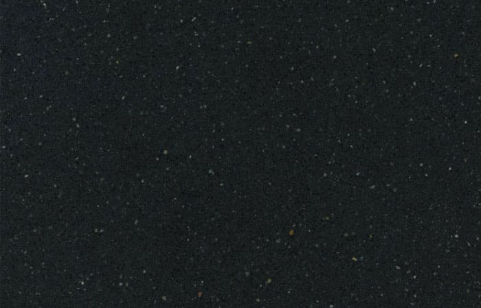

Silestone
Características
¿Qué es Silestone?
El cuarzo
Silestone está compuesto en un 94% de Cuarzo Natural triturado, resina de poliéster, pigmentos y aditivos. Este aglomerado le proporciona una dureza y una resistencia extraordinarias que, unido a la protección antibacterias, le dotan de unas cualidades de higiene magníficas, bellos y variados colores, extraordinarias texturas, y unas altas prestaciones.
Propiedades
- Resistenta a las manchas: Silestone es una superficie no porosa y altamente resistente a las manchas de café, vino, limón, aceite de oliva, vinagre, maquillaje y muchos otros productos de uso diario.
- Resistente al rayado: El cuarzo es uno de los minerales más duros que existen. Esto hace que nuestros productos sean muy duraderos, con un alto nivel de resistencia a las agresiones externas.
- Resistente al impacto: La elevada resistencia al impacto de Silestone permite tener una tranquilidad en su cocina ante la manipulación de objetos de gran dureza.
- Calidad Garantizada: Cosentino ofrece a sus consumidores 25 años de garantía para las encimeras de cocina Silestone.
- Amplia gama de colores: Silestone en Argentina está disponible en 40 colores, asegurándose que haya un color que se adapta a la mayoría de estilos o texturas.
Espesores
Se ofrecen 2 espesores diferentes. En 12 y 20 mm.
Formatos
TABLAS: actualmente se están comercializando 2 formatos, el Standar de 306 x 140 y el Jumbo de 325 x 159 cm.
Texturas
Se ofrecen 3 acabados diferentes.
- Pulido: Es acabado tradicional de Silestone es el pulido en la que se intensifican los colores y sus reflejos.
- Suede: El acabado Suede de Silestone ofrece una superficie que transmite una percepción sensorial única al tacto por su belleza y elegancia.
- Volcano: Una textura rústica pero suave a la vez.
Galeria


